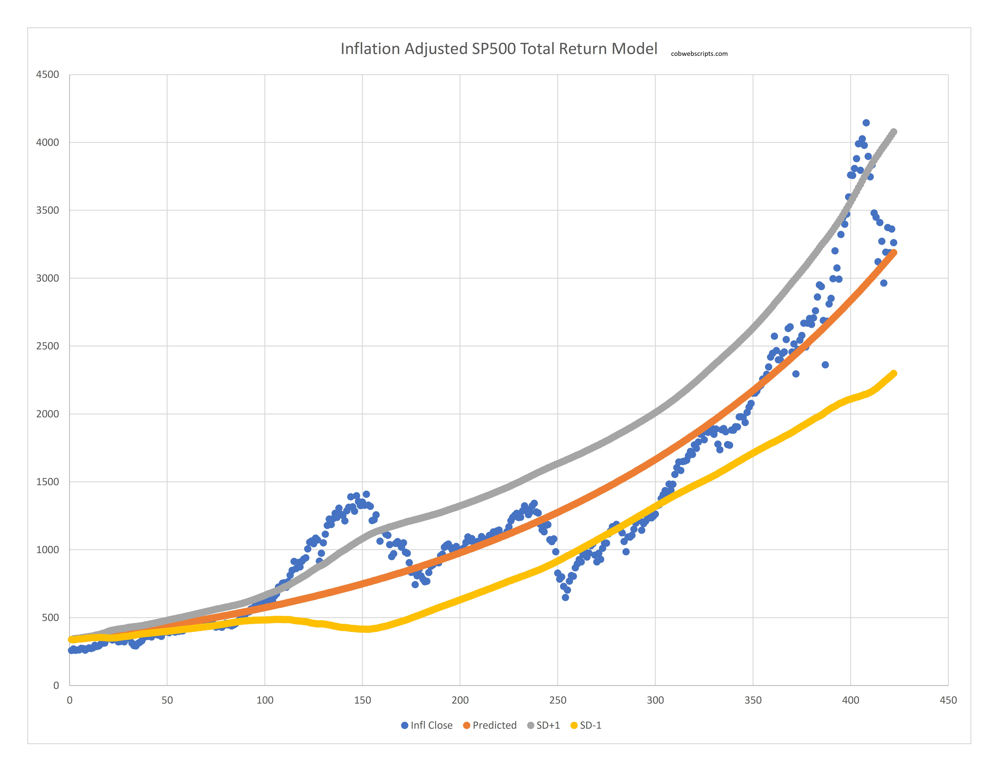

This desperately needs fleshing out. But to keep it short, this is a regression on SP500 total return. It is inflation adjusted. It is based on the Yahoo Finance ticker ^SP500TR. I used the total return because it helps put a better relationship of the SP500 over the years. Otherwise the years in which dividends drove returns vs stock appreciation becomes misconstrued. You can use this as a proxy measure for the SP500 index. You have to adjust for dividends, but it is very close to what you can expect. How does a person use this? Well you probably should not use it as a timing tool, but rather as a barometer of the market. If this is crossing over the upper standard deviation, chances are future returns are going to be poorer than average. Why bother using this? Well hopefully once I clean it up, it offers a different perspective by taking into account total returns. Effectively this is another mean reversion model. Also this is not financial advice yada yada.
Here is a summary of relevant data from the chart. This will show you the predicted values as well as some future values for ^SP500TR. All of these are for end of month. The predicted values are what the regression line says if it is extended into the future. Predicted in this case means the "fair/expected value" is what is listed down below.
Inspired by:
Sources: